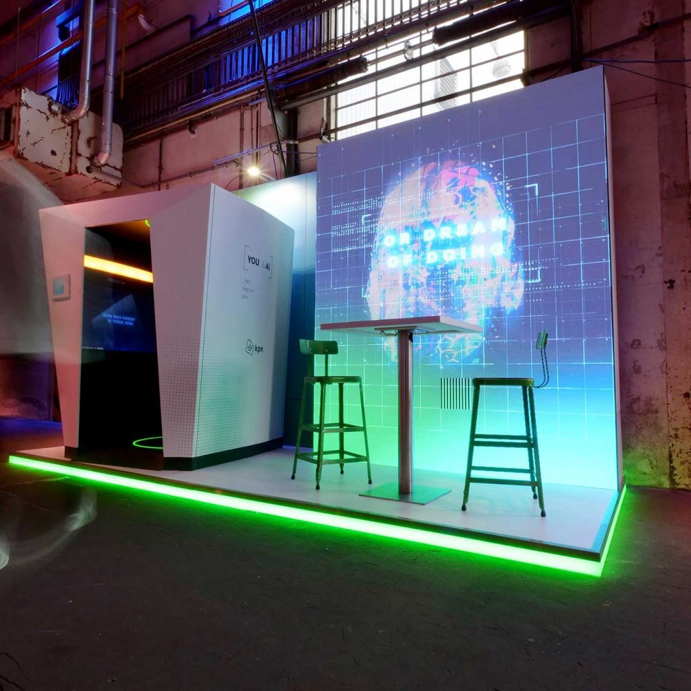

YOU AND AI is een Augmented Reality installatie. Deze installatie is maakt deel uit van het recruitment campaign van KPN in Nederland. De kwestie die bij dit project centraal staat is : nemen robots onze banen over? Met een interactieve belevenis laat YOU AND AI mensen de mogelijke toekomst beleven met robots en hoe mensen in de toekomst leven.
Zodra je voor de installatie staat, wordt er gevraagd om je naam en beroep in te vullen op de Ipad naast de installatie. Nadat je dat gedaan hebt, wordt er gevraagd om in de installatie te gaan. De installatie detecteert dat er een persoon in de installatie staat en start de ervaring. De installatie vertelt je een verhaal en transformeert je ondertussen in een cyborg. De persoon kan in de installatie volledig bewegen waarbij de cyborg gezicht ook meebeweegt. Als je geluid maakt, dan maakt de gezicht ook geluid. De persoon is in controle. Aan het eind kan je je gegeven achterlaten en wordt je cyborg gezicht naar je toegestuurd. Er wordt dan voordat je weggaat een percentage weergeven met hoeveel procent een robot jou beroep in de toekomst overneemt.
YOU AND AI maakt gebruik van AR. Met de camera sensoren wordt er een tijdelijke opname gemaakt van je gezicht. Zodra de sensoren je gezicht contouren berekend hebben, wordt er langzamerhand delen van de cyborg gezicht op je echte gezicht geplaatst op basis van de gezichtscontour.
YOU AND AI is een typisch geval van een HCI project. Het maakt gebruik van de technologieën die we geleerd hebben in de AR/VR lessen. Naast dat het gebruik gemaakt van AR, maakt het ook gebruik van computer vision, namelijk met de camera sensoren die een opname maken van je gezicht om de AR goed te weergeven.
Augmented Reality in het algemeen is iets wat mij erg fascineert. YOU AND AI maakt hier goed gebruik van, het immersive, je gaat een “hok” binnen en je bent opeens in een andere wereld. Een ‘AI” praat tegen en je ziet jezelf veranderen in een cyborg die al je bewegingen nadoet. Zelf lijkt het mij ook leuk om deze installatie zelf te beleven.
